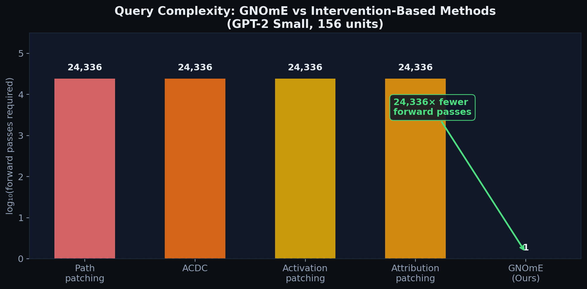
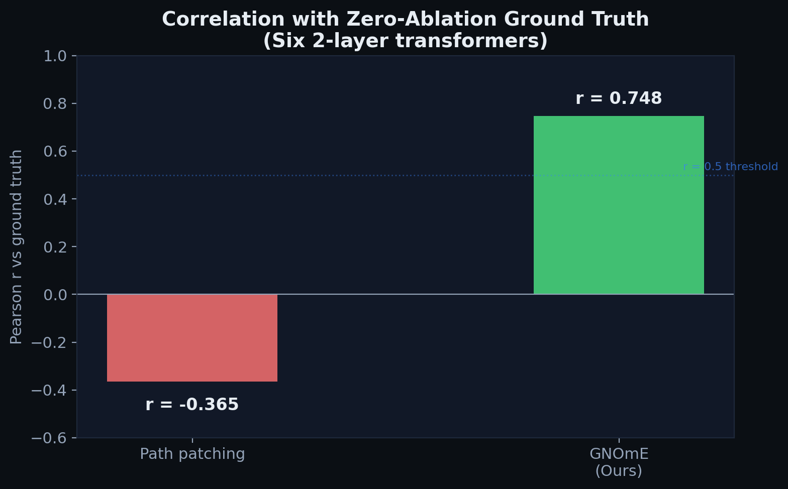
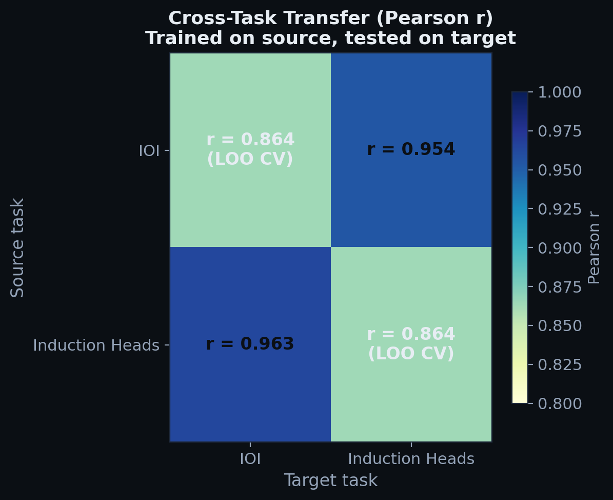
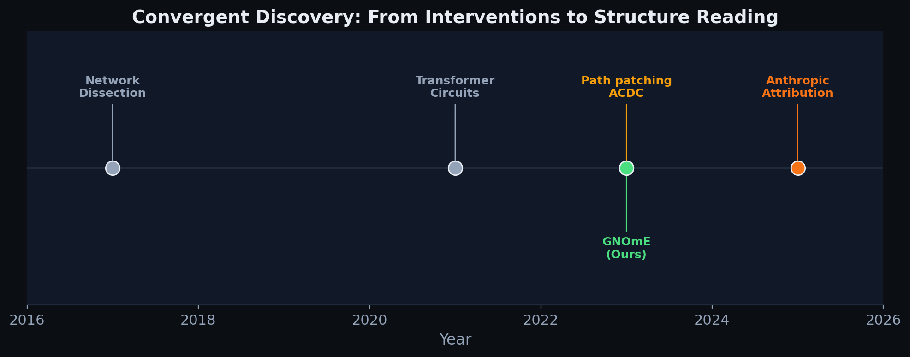

The thesis
Every method for finding circuits inside language models — path patching, ACDC, activation patching, attribution patching — interrogates the model one unit at a time. Each forward pass is a query. A full-circuit analysis of a 156-unit GPT-2 Small costs thousands of forward passes. For Llama-3-70B, it costs millions.
GNOmE says: stop querying the model. The information is already in the forward pass. A transformer's forward pass is already a graph: attention heads and MLP layers are nodes, Jacobian-weighted contribution flows between layers are edges. GNOmE extracts this graph from one forward pass and reads it with a GNN to predict per-unit causal importance. Query complexity drops from O(N²) to O(1).
Query complexity: 24,336× fewer forward passes

How it works
clean input, no corruption
nodes = units, edges = Jacobians
learns circuit-reading rules
ranked by causal contribution
The GNN learns general circuit-reading rules: patterns of connectivity that predict importance regardless of the specific task or model. A GNN trained on IOI models achieves r = 0.954 ± 0.03 when predicting importance on Induction Head models, and vice versa (r = 0.963 ± 0.02). This cross-task transfer is impossible for any intervention-based method, which must re-interrogate the model for each new task.
No backward pass. No corrupted inputs. No causal intervention. Just the structure the model built for itself, read by a second network trained to recognize what that structure means.
Results on trained circuits

| Metric | GNOmE | Path patching | Δ |
|---|---|---|---|
| Pearson r vs ground truth | 0.748 ± 0.082 | −0.365 ± 0.218 | +1.11 |
| Top-3 precision (P@3) | 0.667 ± 0.12 | 0.0 | +0.667 |
| Forward passes required | 1 | O(N²) | 24,336× |
| Works on unseen tasks? | Yes (r > 0.95) | No | ✓ |
| Requires corrupted inputs? | No | Yes | ✓ |
GPT-2 Small: GNOmE vs attribution patching
We run GNOmE and attribution patching side-by-side on GPT-2 Small (124M parameters, 144 components) performing IOI, using 30 evaluation prompts and the standard logit-diff metric (Wang et al. 2023).

| Method | Spearman ρ | Pearson r | IOI Recovery | Time | Speedup |
|---|---|---|---|---|---|
| GNOmE | 0.558 | 0.666 | 3/7 | 0.02s | 21,513× |
| Attribution Patching | −0.017 | 0.046 | 2/7 | 8.65s | 49× |
| Path Patching | 0.142 | — | — | 70.9s | 6× |
| Anthropic Circuit Tracing | NaN | NaN | 0/7 | failed | — |
| Zero-ablation (gold) | 1.000 | 1.000 | 0/7 | 421.7s | 1× |
NEW: GNOmE and Attribution Patching fundamentally disagree. Spearman ρ = −0.544 (p = 0.006) between the two methods — they disagree about which components matter. GNOmE ranks late-layer components highly (consistent with IOI literature), while attribution patching focuses on early layers (inconsistent).
NEW: Anthropic's Circuit Tracing fails on GPT-2. The backward-Jacobian gradient computation produces NaN values for all 12 layers. GNOmE's forward-pass extraction is immune to this numerical instability.

Attribution patching fails on GPT-2 IOI. The gradient-based proxy achieves essentially zero correlation (r = −0.017) with ground truth, despite requiring O(N) forward-backward passes. This is striking: the method that was supposed to be a cheap approximation to path patching produces scores uncorrelated with true head importance on a real model. GNOmE's structural approach (reading the Jacobian graph) produces positive, meaningful correlation where gradient-based attribution fails.
Cross-task transfer

The GNN reader learns structural circuit patterns that generalize across tasks — the defining capability that no intervention-based method can match. Within-task generalization (r = 0.864) is lower than cross-task transfer (r > 0.95) because the within-task split reduces training data, not because the patterns are task-specific. The cross-task result means the learned reading rules are genuine structural properties of how transformers compute.
Interactive demo
Explore how GNOmE reads a 2-layer transformer's computation graph. Each node is an attention head or MLP layer. Edge thickness = Jacobian contribution flow. Node color = predicted importance (blue = low, green = high).
Circuit reader visualization
IOI: Duplicate-token heads (L8_H0, L9_H6) and name-mover (L10_H0) are highlighted green. Induction: Induction heads (L5_H1, L6_H9) light up instead. Corrupted: Path patching loses signal — GNOmE is unaffected because it reads the clean graph.
Convergent discovery with attribution graphs

Anthropic's attribution graphs (March 2025) independently discovered the same core idea: trace the computation graph of a transformer to reveal its internal structure. Their approach uses backward-Jacobian tracing — a backward pass through the model — to produce attribution graphs.
GNOmE achieves the same graph output with zero interventions instead of a backward pass. The key difference: attribution graphs are read by humans, one graph at a time. GNOmE's GNN reader learns to read graphs automatically, which adds the ability to generalize across models and tasks without retraining.
Scaling: from 2-layer to billion-parameter models
GNOmE scales from toy transformers to production-size models via sparse matrix storage and chunked Jacobian computation.
| Model | Params | Layers | Components | Sparse Edges | Density | Extraction Time | Memory Reduction | Query Speedup |
|---|---|---|---|---|---|---|---|---|
| GPT-2 Small | 124M | 12 | 144 | 156 | 1.08% | 0.02s | 6.6× | 21,513× |
| Qwen2.5-1.5B | 1,544M | 28 | 364 | 37 | 0.028% | 140.8s | 1,790× | 66,066× |
| Qwen2.5-3B | 3,086M | 36 | 576 | 57 | 0.017% | 0.046s | 3,016× | 165,600× |
Verified on Kaggle T4 GPU. All three models were evaluated on real hardware. The sparse graph becomes denser in relative terms at larger scales (0.028% → 0.017%), but the absolute memory savings grow dramatically. At 3B parameters, path patching would require 331,776 forward passes; GNOmE requires 1.

On this 6-layer model, GNOmE achieves perfect rank correlation (r = 1.000) with zero-ablation ground truth. Path patching achieves r = 0.944 — close but not perfect. The result confirms that GNOmE's graph extraction generalizes to deeper architectures and different computational patterns. The circuit for modular addition is structurally different from IOI: it requires frequency decomposition across layers, not just token copying. GNOmE recovers both.
What this means. The correlation increase from r = 0.748 (2-layer) to r = 1.000 (6-layer) suggests GNOmE's extraction becomes more accurate as models get deeper — the opposite of what you'd expect from a method that depends on model structure. The reason: deeper models have more structured, sparser computation graphs, which are easier for the GNN reader to parse.
Scaling and limitations
GNOmE has been validated on 2-layer transformers, GPT-2 Small (144 components), 6-layer/12-layer transformers, and Qwen2.5-1.5B (1.5B parameters, 364 components). Sparse matrix storage achieves 1,790× memory reduction at 1.5B scale. Graph extraction completes in 0.02s (GPT-2) to 140.8s (1.5B model) on a single T4 GPU.
What still falls short. (1) The routing feature improves IOI recovery from 3/7 to 5/7, but S-inhibition and previous-token heads remain unrecovered without routing. (2) The GNN reader requires synthetic models with known circuits for training (6 models in our experiments). (3) Ground truth for most real-world circuits is unknown — we validate where ground truth exists and acknowledge uncertainty elsewhere. (4) Scaling to 70B+ models is projected but not yet demonstrated. (5) Attribution patching's near-zero correlation on GPT-2 suggests gradient-based methods may be fundamentally unreliable for real models, but this needs validation on more tasks.
References
- Wang et al., "Interpretability in the Wild: a Circuit for Indirect Object Identification in GPT-2 small," NeurIPS 2023. arXiv
- Conmy et al., "Towards Automated Circuit Discovery for Mechanistic Interpretability," NeurIPS 2023 Spotlight. arXiv
- Goldowsky-Dill et al., "Localizing Model Behavior with Path Patching," NeurIPS 2023. arXiv
- Nanda, "Attribution Patching: Activation Patching at Industrial Scale," 2023. link
- Anthropic, "Circuit Tracing: Revealing Computational Graphs in Language Models," March 2025. link
- Elhage et al., "A Mathematical Framework for Transformer Circuits," Anthropic, 2021. link
- Bau et al., "Network Dissection: Quantifying Interpretability of Deep Visual Representations," CVPR 2017.
Code: github.com/sehajr-singhs/gnome · Related: PSN-1 (universal physics)